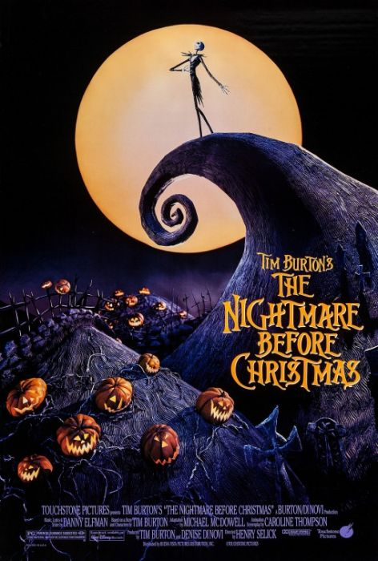
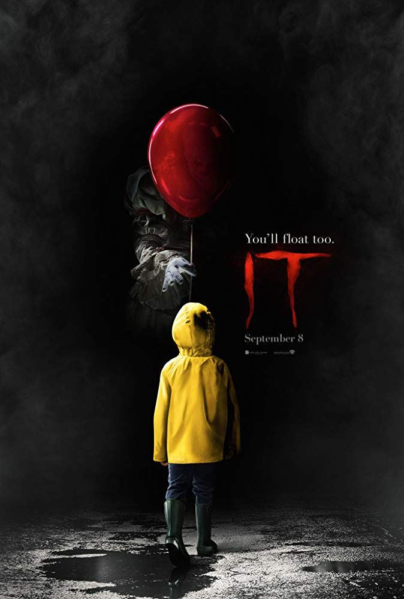
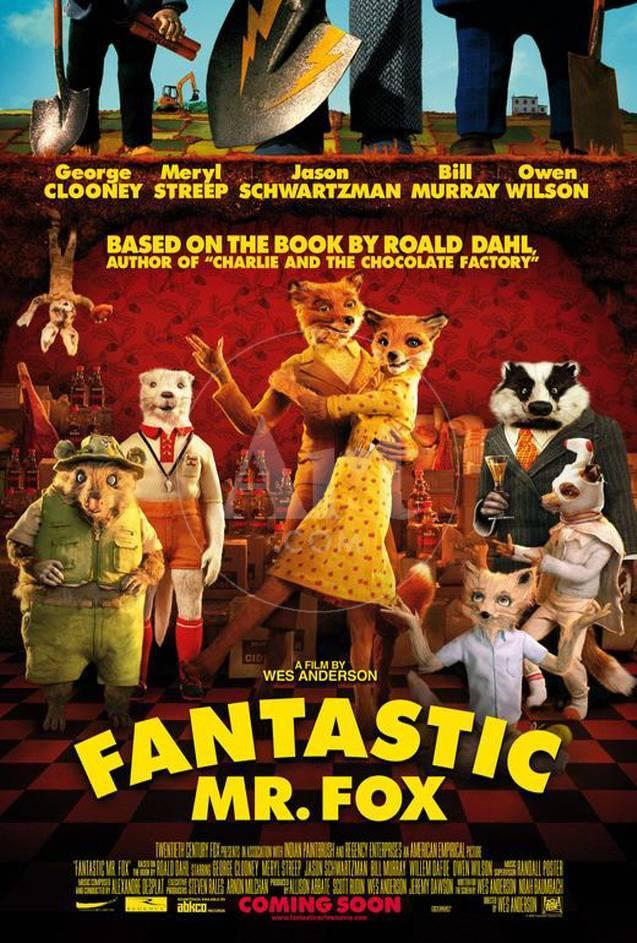
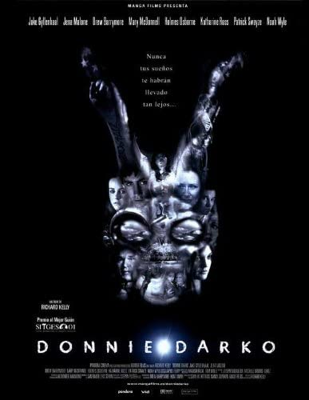

This 2019 whodunnit directed by Rian Johnson perfectly fits the autumn atmosphere.
It’s a great film to watch during the Thanksgiving season as it shows a dysfunctional family
in the wake of the passing of their grandfather. It’s up to a detective to figure out who the
culprit is in this mysterious game of foul play.Watch Trailer

Nightmare Before Christmas
Tim Burton’s Nightmare Before Christmas follows the tale of Jack Skellington,
the beloved Pumpkin King of Halloweentown. Released in 1993, the film focuses on Jack’s
misadventures as he learns about Christmas and attempts to control it for himself. Watch Trailer

It
Based off of Stephen King’s 1986 horror novel, It, the film focuses on seven children from Derry,
Maine who are being terrorized by a creature and while trying to defeat the creature they also come face to
face with their own fears.Watch Trailer

Fantastic Mr. Fox
After going after his human neighbor’s farms, Mr. Fox and friends are forced to go underground in order to survive.
This calls forth the Mr. Fox’s crafty skills, so that he may provide for his friends and family, while simultaneously getting
the upper hand on the humans.Watch Trailer

Donnie Darko
Donnie Darko, released in 2001, is a science fiction film dealing with time travel. The main character, Donnie Darko,
is a troubled teenager who has visions of a giant bunny rabbit named Frank who manipulates him to commit a series of crimes.Watch Trailer